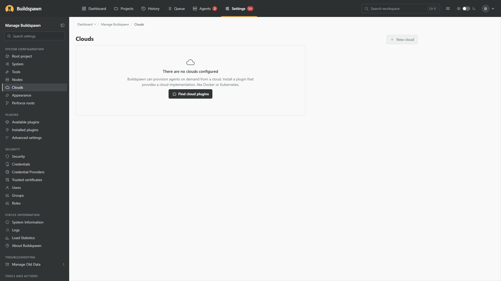

Clouds
A cloud is a source of agents that Buildspawn creates when builds wait and removes when they are done, for example virtual machines or containers. The Clouds tab lists the clouds you have set up.
When to use it
Use a cloud when the load changes a lot, for example many builds on release day and none at night, and you would rather pay for machines only while they work. For machines that always exist, such as devkits and your own build PCs, use permanent agents (see Install an agent).
What this version includes
A cloud needs a cloud provider plug-in: a plug-in that knows how to create agents on one platform. The plug-ins that come with this version of Buildspawn do not include one, so the Clouds page starts empty. Add a cloud provider plug-in first. Then you can set up a cloud here.
The Docker and Kubernetes plug-ins are examples of cloud providers. Check the plug-in list (see Plugins) for what is available for your server.
How to open the page
- Click Agents in the top bar, then the Clouds tab.
- Or open Settings › Clouds. Both open the same page. You need the permission to read system settings.

The page without a cloud
The page says There are no clouds configured and Buildspawn can provision agents on demand from a cloud. Install a plugin that provides a cloud implementation, like Docker or Kubernetes.
| Button | What it does |
|---|---|
| New cloud | Greyed out (Install a cloud plugin first) until a provider plug-in is installed. |
| Find cloud plugins | Opens the plug-in manager at the cloud category. |
How to add a cloud
After you have installed a cloud provider plug-in:
- Open Agents › Clouds and click New cloud.
- Type a Cloud name.
- Pick the type of cloud (the provider's name), or Copy Existing Cloud and type the name of the cloud to copy.
- Fill in the provider's own settings: the connection, the images or templates, and how many agents it may create. These fields come from the plug-in, so they differ for each provider.
- Click Save.
When there is more than one cloud, the table lists them in order, and clouds are tried in the order they appear in this table when a new agent is needed. Change the order, then click Save.
A cloud's own pages
| Page | What it does |
|---|---|
| Status (Cloud NAME) | The cloud's overview. The provider can add its own information, such as the agents it is creating. |
| Configure (Cloud NAME Configuration) | Change the provider's settings. |
| Delete Cloud | Asks Delete the cloud 'NAME'? and removes it. It needs the permission to change system settings. |
Clouds and the Agents page
- Agents that a cloud creates are shown like other agents. Their type is
cloud: the parameteragent.typeiscloud(see Labels and agent requirements). - While the cloud is creating agents, the provider can add rows to the Agents list for them.
- A cloud agent belongs to a pool like any other agent (see Pools).
A worked example
Your Linux builds mostly run during the day. A provider plug-in for your container platform is installed.
- Open Agents › Clouds › New cloud. Name it
linux-containersand choose the provider. - In the provider's settings, add a template with the label
linux dockerand a limit of 6 agents. - Save. A build that needs
linux && dockernow makes the cloud create an agent when no other agent is free.
What you see when it runs
- A waiting build makes a new agent appear in the Agents list, offline at first and then idle when it has connected.
- When the agent has been idle for the time the provider sets, the agent is removed.
Problems and fixes
| Problem | What to do |
|---|---|
| New cloud is greyed out. | No cloud provider plug-in is installed. Click Find cloud plugins. |
| Builds wait and no agent is created. | Check that a template of the cloud has the labels the build asks for, and that the cloud's limit is not reached. |
| You cannot see Clouds. | You lack permission to read system settings. Ask an administrator. |